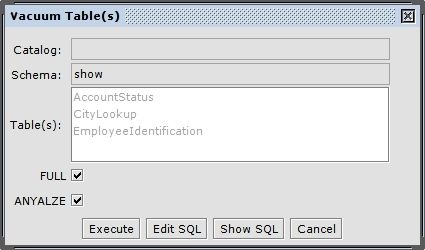

| Contents |
| Introduction |
| New Tabs |
| Index Details Tab |
| Index Source Tab |
| Stored Procedure Source Tab |
| Sequence Details Tab |
| Trigger Source Tab |
| Trigger Details Tab |
| View Source Tab |
| VACUUM |
| EXPLAIN (Query Plan) |
The PostgreSQL plugin adds PostgreSQL-specific functionality to the SQuirreL SQL Client. Read access is required to the following system views in order for this additional functionality to work correctly:
Note: Some statistical counts are only available when statistics collection is enabled. The statistics collector must be configured to be launched before the server is started by setting stats_start_collector to true in postgresql.conf. (This is the default setting) Additionally, statistics need to be sent to the collector with a few more configuration items which can be made at runtime. To change these for a session the user needs to be a superuser. This can be done in postgresql.conf or on a per-session basis with the following commands:
set stats_block_level to on set stats_row_level to on
Be aware that these settings will add overhead to query execution (which is why they are disabled by default)
Stored Procedures, Triggers and Views are shown in the object tree and have a "Source" tab which displays the source of the selected object and a "Details" tab which gives PostgreSQL-specific information about the object. Sequences and Indexes are also shown in the object tree and have a details tab giving DB2-specific information about them.
The index details tab can be accessed by navigating the object tree to the INDEX folder beneath any table that has one or multiple indexes. The index(es) will be listed by name under the table folder, and selecting one will place a details tab in the right-hand view of the session window.
The information provided by the details tab for indexes is derived by the following query:
select inds.schemaname as schemaname, inds.relname as tablename, i.indisunique as is_unique, i.indisprimary as is_primary_key, i.indisclustered as is_clustered, inds.idx_scan as num_index_scans, inds.idx_tup_read as num_index_entries_returned, inds.idx_tup_fetch as num_table_rows_fetched from pg_catalog.pg_index i, pg_catalog.pg_stat_all_indexes inds where i.indexrelid = inds.indexrelid and inds.schemaname = ? and inds.indexrelname = ?
The index source tab can be accessed by navigating the object tree as above and selecting the "Source" tab which is adjacent to the "Details" tab. An example is shown below:

The information provided by the source tab for indexes is derived by the following query:
select indexdef from pg_indexes where schemaname = ? and indexname = ?
The Stored Procedure Source tab can be accessed by navigating to a schema and then to the PROCEDURE folder beneath the schema. In the following picture, the schema is "dbcopydest"

The source code for stored procedures is derived by the following query:
SELECT p.prosrc FROM pg_proc p, pg_namespace n where p.pronamespace = n.oid and n.nspname = ? and p.proname = ?
Sequences will appear in the object tree under the SCHEMA folder. The details tab for sequences displays information about the selected sequence according to the system catalog. An example of this is shown in the following picture:

The information in the details tab for a sequence is derived from the following query:
SELECT last_value, max_value, min_value, cache_value, increment_by, is_cycled FROM <schema.sequencename>
The source tab for triggers displays the source for a table trigger and can be accessed by navigating to the "TRIGGER" folder beneath a table object in the object tree. An example of this is shown in the following picture:

The source code for triggers is derived from the following query:
select 'create trigger ' || t.trigger_name || ' ' || condition_timing || ' ' || v.manip || ' on ' || event_object_table || ' for each ' || action_orientation || ' ' || action_statement as trigdef FROM information_schema.triggers t, (select trigger_schema, trigger_name, rtrim( max(case when pos=0 then manip else '' end)|| max(case when pos=1 then manip else '' end)|| max(case when pos=2 then manip else '' end), ' or ' ) as manip from ( select a.trigger_schema, a.trigger_name, a.event_manipulation||' or ' as manip, d.cnt, a.rnk as pos from ( select trigger_name, trigger_schema, event_manipulation, (select count(distinct is1.event_manipulation) from information_schema.triggers is1 where is2.event_manipulation < is1.event_manipulation) as rnk from information_schema.triggers is2 ) a, (select trigger_schema, trigger_name, count(event_manipulation) as cnt from ( select trigger_schema, trigger_name, event_manipulation, (select count(distinct is3.event_manipulation) from information_schema.triggers is3 where is4.event_manipulation < is3.event_manipulation) as rnk from information_schema.triggers is4 ) y group by trigger_schema, trigger_name) d where d.trigger_name = a.trigger_name and d.trigger_schema = a.trigger_schema ) x group by trigger_schema, trigger_name order by 1) v where t.trigger_schema = v.trigger_schema and t.trigger_name = v.trigger_name and t.trigger_schema = ? and t.trigger_name = ? group by trigdef
The details tab for triggers displays information about the selected trigger according to the system catalog. An example of this is shown in the following picture:

The information in the details tab for a trigger is derived from the following query:
select condition_timing AS trigger_time, v.manip AS triggering_event, action_orientation AS granularity, event_object_table AS table_name FROM information_schema.triggers t, (select trigger_schema, trigger_name, rtrim( max(case when pos=0 then manip else '' end)|| max(case when pos=1 then manip else '' end)|| max(case when pos=2 then manip else '' end), ' or ' ) as manip from ( select a.trigger_schema, a.trigger_name, a.event_manipulation||' or ' as manip, d.cnt, a.rnk as pos from ( select trigger_name, trigger_schema, event_manipulation, (select count(distinct is1.event_manipulation) from information_schema.triggers is1 where is2.event_manipulation < is1.event_manipulation) as rnk from information_schema.triggers is2 ) a, (select trigger_schema, trigger_name, count(event_manipulation) as cnt from ( select trigger_schema, trigger_name, event_manipulation, (select count(distinct is3.event_manipulation) from information_schema.triggers is3 where is4.event_manipulation < is3.event_manipulation) as rnk from information_schema.triggers is4 ) y group by trigger_schema, trigger_name) d where d.trigger_name = a.trigger_name and d.trigger_schema = a.trigger_schema ) x group by trigger_schema, trigger_name order by 1) v where t.trigger_schema = v.trigger_schema and t.trigger_name = v.trigger_name and t.trigger_schema = ? and t.trigger_name = ?
The source tab for views displays the source for a view and can be accessed by navigating to the "VIEW" folder beneath a schema object in the object tree. An example of this is shown in the following picture:

The source code for views is derived from the following query:
select view_definition from information_schema.views where table_schema = ? and table_name = ?
The PostgreSQL-specific VACUUM statement garbage-collects and optionally analyzes tables or a whole database.
This plugin allows it to directly generate and execute these vacuum statements in the object tree tab of squirrel.
The generated statements can optionaly contain the FULL and/or ANALYZE parameters:
Vacuum Database
To vacuum the whole database, right-click the top most node in the object tree (the database node).
Access the PostgreSQL menu and select Vacuum Database.
Hint: The PostgreSQL menu can also be accessed at any time via the Session menu in Squirrels main menu bar.


The dialog above would generate the following SQL statement:
VACUUM FULL VERBOSE ANALYZE ;
Vacuum Table(s)
To vacuum a set of tables, right-click a selection of one or more tables in the object tree.
Access the PostgreSQL menu and select Vacuum Table(s).


The dialog above would generate the following SQL statement:
VACUUM FULL VERBOSE ANALYZE "show"."AccountStatus"; VACUUM FULL VERBOSE ANALYZE "show"."CityLookup"; VACUUM FULL VERBOSE ANALYZE "show"."EmployeeIdentification";
The PostgreSQL-specific EXPLAIN statement shows the execution plan (query plan) of an sql statement. This plugin adds an additional executor tab to the sql panel for the display of the execution plan.
To display the execution plan of a selected statement in the sql panel, switch to the Query Plan tab.
Executing an SQL statement while the Query Plan tab is the activ executor tab, will display the query plan of the statement.
(Instead of actualy executing the statement on the database.)

Multiple Statements
It is also possible to execute multiple statements. Each query plan for a statement
will be displayed in own tab within the Query Plan tab.
Closing a Query Plan
Query Plans will stay in the Query Plan tab until removed by using one of the close action
in the right-click menu or by clicking on the close icon on the upper right edge of the panel.